Imagine hiring the world's most knowledgeable assistant — someone who has read virtually everything ever written, speaks every language, and can code, write, analyze, summarize, and create on demand. Now imagine that this assistant gives completely different results depending on how you phrase your request. That is exactly what working with AI feels like today.
Prompt engineering is the skill of getting consistently great results from that assistant. Whether you are a developer building AI-powered products, a marketer generating copy at scale, or a professional trying to save time, knowing how to work effectively with AI is fast becoming as fundamental as knowing how to use a spreadsheet.
This guide walks through what prompt engineering is, why it matters, how strong practitioners approach it, and the practical techniques you can start applying right now.
What Is Prompt Engineering?
At its core, prompt engineering is the process of discovering prompts that reliably yield useful or desired results.
A prompt is simply the input you provide to an AI model — text, image, audio, documents, instructions, or a combination of context and rules. When you type a question into ChatGPT or Gemini, or ask an image model to generate a visual, you are writing a prompt. Prompt engineering is the discipline of doing that well.
Large language models work by predicting the next token in a sequence based on everything that came before it. A token is roughly a small chunk of text, often about three-quarters of a word. The crucial insight is this: what you put in your prompt changes the probability of every token generated in the response. An average prompt yields an average response. A well-engineered prompt can unlock results that feel almost magical.
These models have absorbed patterns from enormous amounts of text and can emulate many formats, styles, and workflows — if you know the right way to ask.
Why Does Prompt Engineering Matter?
Consider a simple example. You want an AI to generate product names for a shoe that fits any foot size. A naive prompt might be:
You will get something back. It might even be decent. But this approach has several problems, especially if you are building a real product or repeatable workflow:
- Vague direction: you have not told the AI what style of name you want — single word, invented word, premium tone, playful tone, or a specific brand voice.
- Unformatted output: the response may vary each time: numbered list, paragraphs, commentary, or an inconsistent structure that is hard to parse programmatically.
- No examples: without guidance, the AI averages across its broad training patterns, which may not match your taste or goals.
- No evaluation: you have no systematic way to decide which names are good, so every result requires manual review.
- No task division: you are asking one prompt to do creative, strategic, and quality-control work without any structure.
Now compare that with a prompt that specifies the desired style, output format, target audience, and examples. The result becomes more consistent, structured, and useful. This is the power of prompt engineering.
The Five Principles of Prompting
Across generative AI research and hands-on practice, a consistent set of principles has emerged. These five principles form the backbone of effective AI communication.
1. Give Direction
Without context, an AI model is essentially guessing. Giving direction means briefing the AI the way you would brief a human colleague. Include the goal, audience, constraints, tone, role, and business context.
One powerful direction technique is role prompting: asking the AI to respond as a specific expert, persona, or point of view. The difference between asking for “product names” and asking for “product names in the style of a premium product strategist” can be significant.
Another technique is prewarming, sometimes called internal retrieval. First ask the AI to describe best practices for a task, then ask it to apply those best practices to the actual output. In effect, you use the model to generate part of its own direction before it performs the work.
Rule of thumb: think about what context a human expert would need to complete the task well, then include that context in the prompt.
2. Specify Format
AI models are universal translators in many ways. They can return prose, JSON, YAML, tables, bullet points, Python code, shell commands, haiku, email copy, or structured analysis. A key part of prompt engineering is telling the model exactly what format you need.
This is critical in production software. If downstream code expects a comma-separated list and the model returns a numbered paragraph instead, you have a bug. Specifying format reduces that variability.
For developers, requesting JSON output is often a practical standard because it is easy to parse and validate:
You can also specify output length, tone, structure, field names, accepted values, and what not to include. The more explicit you are about the format, the more reliable the result becomes.
3. Provide Examples
This principle comes from the idea of few-shot learning. Providing even one example alongside a prompt can dramatically improve the output because it calibrates the model to your desired style and pattern.
- Zero-shot: no examples are provided; the model infers the task entirely from the instruction.
- One-shot: one example is provided; this often improves consistency noticeably.
- Few-shot: multiple examples are provided; this usually makes output more reliable and repeatable.
Examples help the AI align with your taste rather than averaging across broad internet patterns. The key is choosing examples that are diverse enough to cover edge cases but consistent enough to guide the model's style.
A caution: too many examples can constrain creativity. After three to five examples, responses may become very reliable but more formulaic. Choose the balance that fits your use case.
4. Evaluate Quality
Without a feedback loop, you are flying blind. Evaluation turns prompt engineering from guesswork into a systematic discipline.
A simple starting point is to run a prompt 5–10 times and rate each output with a thumbs up or thumbs down. This quickly reveals failure modes that a single test would miss. From there, use more rigorous checks:
- Cost and latency: is the prompt efficient enough for production?
- Classification accuracy: how often does the model categorize inputs correctly?
- Hallucination detection: how often does the model invent facts not present in the prompt or trusted context?
- Format compliance: does the model consistently return the structure you requested?
- A/B testing: compare prompt variants across many runs to identify the better performer.
Professionals do not rely on one lucky response. They measure, compare, and iterate.
5. Divide Labor
As tasks grow more complex, a single prompt starts to buckle under too many requirements. The final principle is task decomposition: breaking a complex goal into smaller, chained AI calls.
A simple single-prompt technique is to ask the model to reason step by step before answering. This gives the model more room to work through complex tasks. For product workflows, a stronger approach is to chain multiple focused steps:
- Generate a list of product names.
- Rate those names against specific criteria.
- Pass the best name into another prompt to create a product description.
- Use that description to generate an image prompt for a visual AI tool.
- Review and format the final result for publishing.
This approach — often called AI chaining or meta-prompting — is how many serious AI applications are built under the hood. Frameworks such as LangChain were created to manage and structure these multi-step workflows.
Good Prompt vs. Bad Prompt
Here is a concrete illustration of the difference good prompt engineering makes.
Weak Prompt
What is wrong: there is no audience, tone, length, call to action, or output format. The model must make many assumptions and may return something generic or off-brand.
Strong Prompt
Why it works: it provides the audience, product context, tone, length, structure, format, and goal. The output has a much better chance of being useful on the first try.
Practical Tips and Best Practices
- Be specific about what you want: ambiguity is the enemy of reliable AI output.
- Specify what not to include: negative constraints reduce noise and unwanted commentary.
- Use personas: roles activate relevant patterns, terminology, and decision criteria.
- Request structured output: JSON, YAML, tables, and templates are easier to validate and reuse.
- Use examples: examples teach the model your preferred style faster than abstract instructions alone.
- Start simple, then iterate: add constraints only where they improve reliability.
- Test repeatedly: one good response does not prove a prompt is production-ready.
- Watch token costs: every prompt, example, context block, and response consumes tokens.
The Bigger Picture
Models will keep changing. GPT, Claude, Gemini, Llama, and future systems all have different strengths and quirks. But the fundamentals remain stable: give direction, specify format, provide examples, evaluate quality, and divide labor.
Prompts are instructions, not searches. Treat the AI like a talented but context-blind teammate who needs a clear brief.
Conclusion
Prompt engineering is not magic. It is a learnable discipline for communicating clearly with AI systems and measuring whether they are doing the job well.
The best prompt engineers are not necessarily the most technical people in the room. They are the people who understand what they want, can communicate it precisely, and build feedback loops to improve the result.
As AI becomes part of more products and workflows, prompt engineering will become less like a niche trick and more like a core digital skill. The better you learn to brief AI systems, the more useful they become.